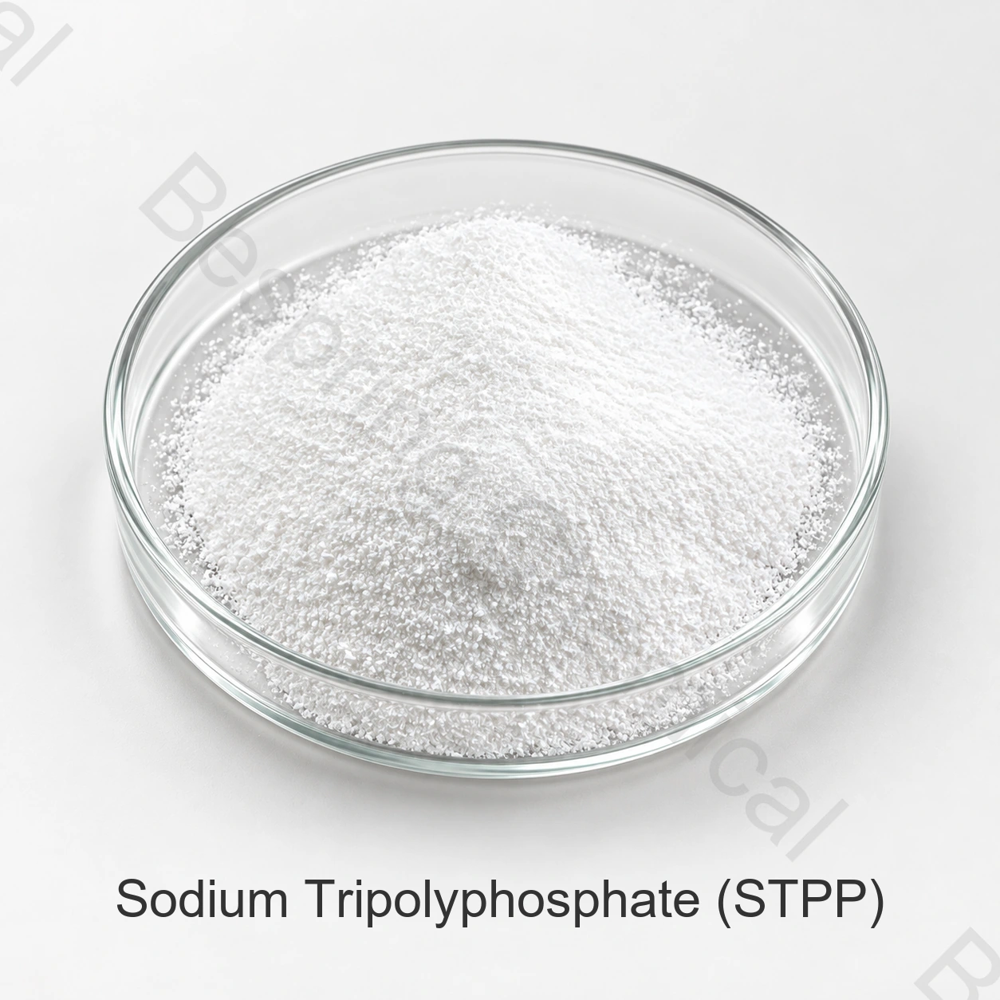

Управление влажностью
Может поддерживать связывание и переработку воды в подходящих белковых формулах.
Пищевой фосфат · INS 451(i) · STPP
Триполифосфат натрия пищевого качества (STPP), INS 451(i), — конденсированный фосфат для связывания ионов металлов и регулирования текстуры в разрешённых рецептурах. Для закупки важны водная форма, содержание, примеси и методы анализа.
Включите необходимый стандарт, количество, предпочтения по паллетам, место назначения и заявку для эффективного рассмотрения.

Обзор продукта
Триполифосфат натрия пищевого качества (STPP) — пентанатриевая соль трифосфорной кислоты. Она также известен как пентанатрийтрифосфат и несёт в себе Кодекс INS номер 451(i). Материал поставляется в виде белых гранул или порошка и вмещается в выбранные переработанные продукты, когда требуется функциональность фосфатов.
В вопросах закупок «пищевая категория» никогда не следует рассматривать как целостную спецификацию. Покупатели также должны подтвердить анализ, P2O5, нерастворимые вещества, пределы загрязняющих веществ, форма частиц, методы испытаний и документация по рынку назначения.
Значение рецептуры
STPP может обеспечивать несколько технических функций, но результаты применения зависит от полной фосфатной системы, сырья, условий процесса и уровня легального использования.
Может поддерживать связывание и переработку воды в подходящих белковых формулах.
Помогает переработчикам управлять остротой, консистенцией и текстурой готового продукта в проверенных рецептах.
Поддерживает стабильные системы жира, белка и воды в отдельных областях обработанной пищи.
Связывает определённые ионы металлов, которые в противном случае могут мешать работе продукта или процесса.
Типичные области применения
Пищевую категорию, дозировку и маркировку оценивают по требованиям рынков производства и сбыта.
STPP рассматривается в валидированных рассолах, маринадах и системах обработанного белка, где важны удержание влаги, текстура и выход процесса.
Пищевые фосфаты могут использоваться в отдельных молочных и более широких переработанных пищевых продуктах для эмульгирования, стабилизации или управления минералами-ионами.
Технические характеристики продукции
Приведены коммерческие справочные показатели. Критерии приёмки определяют согласованная спецификация, методы испытаний и COA конкретной партии.
| Показатель | Спецификация | Единица / пояснение |
|---|---|---|
| Анализ (Na5P3O10) | ≥ 85.0 | % |
| P2O5 | 56.0–58.0 | % |
| Нерастворимые в воде вещества | ≤ 0.1 | % |
| Фтор | ≤ 50 | ppm |
| Мышьяк | ≤ 3 | ppm |
| Тяжёлые металлы | ≤ 10 | ppm |
| Свинец | ≤ 4 | ppm |
| Внешний вид | Белые гранулы или порошок | Визуальная оценка |
Сравнение результатов: В монографии JECFA 2000 года предел фторида составляет 50 мг/кг. Коммерческие 50 ppm не доказывают соответствие всей монографии: приёмка требует согласованной водной формы, полного набора показателей и методов. Результаты могут отличаться из-за различий в условиях испытаний, оборудовании и методах. Перед заключением контракта подтвердите методы, правила отбора проб и критерии приема.
Упаковка и логистика
Окончательная загрузка зависит от лимитов контейнеров, маршрута, размеров паллет и требований к доставке.
Хранение и срок хранения
Вопросы покупателя
Он применяется в разрешённых пищевых продуктах, где требуется функциональность фосфатов, включая выбранные мяса, птицу, морепродукты, молочные продукты и переработанные продукты. Точная функция и уровень использования зависят от рецепта, процесса и местных правил.
Триполифосфат натрия идентифицируется по Кодексу INS номер 451(i). Названия и разрешённые области применения для рынка могут различаться, поэтому покупателю следует проверить требования целевого рынка.
Нет. Таблица содержит коммерческие справочные пределы. Сертификат анализа содержит результаты конкретной партии; их сравнивают с договорными пределами и методами.
Стандартная упаковка — это наружный пакет из крафтовой бумаги весом 25 кг с внутренним мешком для PE. Справочная загрузка составляет 23 МТ на 20-футовый контейнер без паллет или 18 тонн с паллетами, при условии подтверждения отправки.
Укажите необходимые стандарты пищевых продуктов, предпочтения, количество, упаковку, требования к паллетам, порт назначения, применение и цель доставки.
Спросите у отдела продаж спецификации, TDS, SDS, соответствующие документы по качеству и наличие образцов. Укажите своё заявление и адрес назначения, чтобы соответствующие документы могли быть рассмотрены.
Обсудить поставку
Укажите коммерческими и техническими деталями, влияющими на выбор продукции, загрузку контейнеров и стоимость посадки.